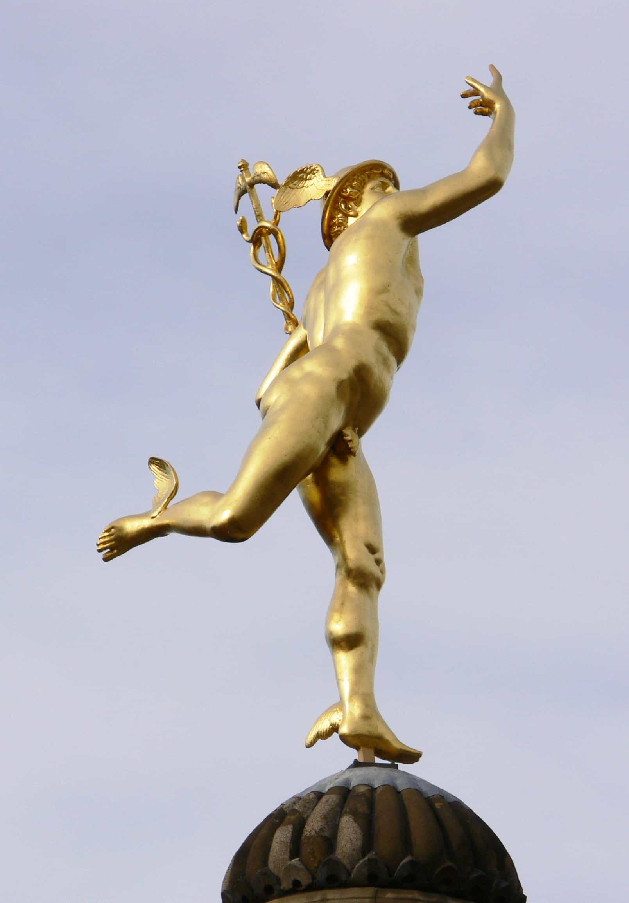
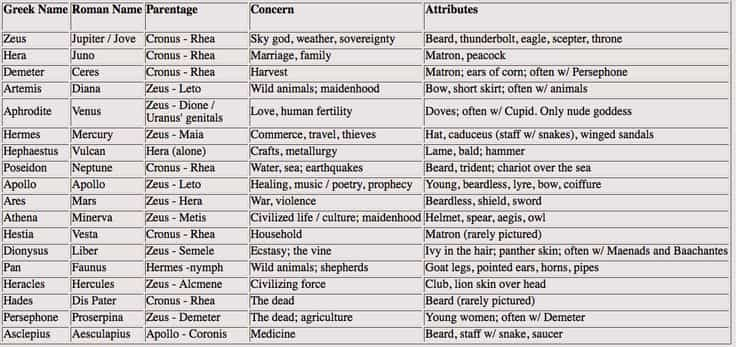
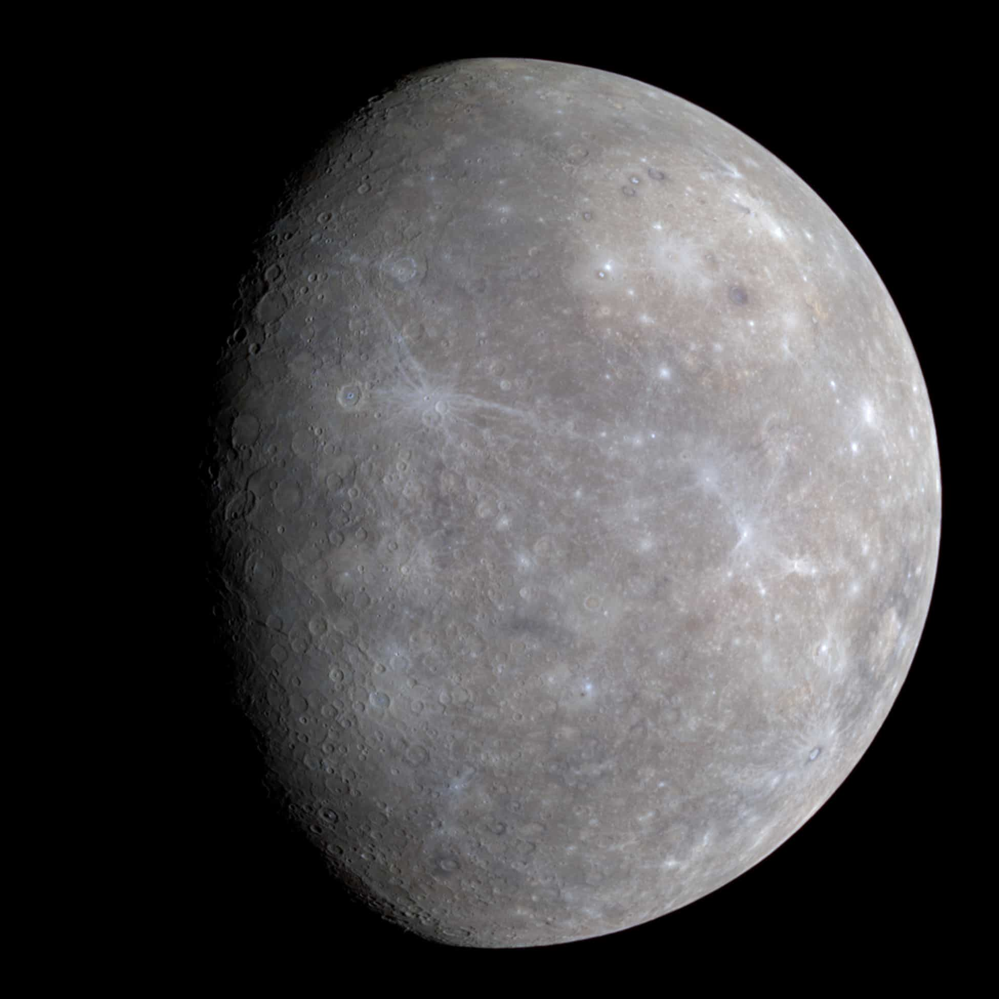
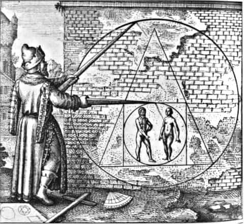

In an article titled 7 Core Principles To Help Reinvigorate Western Culture, I mentioned Greco-Roman culture as the main source of inspiration for current and future endeavors within the West, including both Christianity and the Hellenic past. I take it for granted that many agree upon this outlook, rather than Westerners looking at Vedic, Buddhist, Taoist or Islamic sources of inspiration.
In this regard there a number of gods and symbols that might be of particular significance for parts of the readership. Those who almost represent the essence of this websites’ spirit. For instance, if one takes the concept of neomasculinity as a starting point, one notices that elements such as game, self-improvement, ethics, entrepreneurship, and male virtue and development constitute important parts of it. That in turn can make one want to look for proper symbols within Western history.
One relevant such is the Greek god Hermes, which many likely only have a limited understanding of. In Antoine Faivre’s book The Eternal Hermes: From Greek God To Alchemical Magus (1995), and additional sources, a more nuanced and full description of this complex and multi-faceted divine figure emerges. I intend to look into some of these dimensions and point out which specific facets that are of particular relevance in this context.
The manifold functions of Hermes
As the fact site Greeks Gods and Goddesses tells us:
Hermes was one of the 12 Olympian Gods and was god of trade, thieves, travelers, sports, athletes, and border crossings, guide to the Underworld. He was the second youngest Olympian god and was the son of ZEUS and Maia, one of the seven Pleiades and daughter of the Titan Atlas.
As the god of boundaries and transitions, Hermes was known to be quick and cunning and had the ability to freely move between the mortal and divine worlds. It is this skill that made him a luck-bringing messenger to the gods and intercessor between mortals and the divine.
He is also the patron and protector of travelers, herdsmen, thieves, orators and wit, literature and poets, athletics and sports, invention and trade. In some myths Hermes is also depicted as a trickster where he would outwit the gods either for the good of humankind or for his own personal amusement and satisfaction.
Both Homer and Hesiod portrayed Hermes as the author of skilled or deceptive acts, and also as a benefactor of mortals.


In this regard one can think of neomasculine phenomena such as game, travel, physical nurturing, making money, upsetting politically correct people with hate facts and memes, as well as accumulating lots of knowledge. The Roman equivalent of Hermes is Mercury, associated with the merchant occupation, but as clearly showed above this is but one of many functions.
There are other facets of Hermes too, most notably Hermes Trismegistus, the proclaimed author of The Hermetica, the Greek-Egyptian sacred texts from the 2nd and 3rd centuries AD. These were translated into Latin in the late 15th century by Marsilio Ficino, compiled as the Corpus Hermeticum. This work has influenced many writers of the Perennial school of religious philosophy (Philosophia perennis) and similar branches of thought.
Carl Gustav Jung’s ideas of individuation and the collective unconscious have been influenced by Hermes’ transcendental function, and Julis Evola has written The Hermetic Tradition, a work which deals with the esoteric teachings of alchemy, different from both the archaic cults of Hermes/Mercury, Jung’s psychology, and primitive chemistry.


Typically one can divide Hermes into Hermes-Mercury (the Greek/Roman god) and Hermes Trismegistus, but it is not that simple as Faivre notes:
At this epoch, we have not only a euhemeristic process, but also a reverse euhemerism: Hermes Trismegistus is both the precipitation of Mercury into human history and the sublimation of history to Olympus. These fluctuations, or rather this twofold motion, favors a fluid genealogy and the presence of several Hermeses.
Additionally there are not only overlaps between and combinations of the two figures, since Hermes is associated not just with the Egyptian god Thoth but also the Islamic Idris and even Jesus or the archangel Michael:
It is no different in the Corpus Hermeticum, which presents Hermes sometimes as a god, sometimes as a sage, and at other times as a disciple of the Nous or Divine Intellect. According to the Arab tradition, his life is simultaneously physical and trans temporal, after the example of Elijah’s, and even in his body he manifests a state of eternity. Pierre Lory recalls that Idris/Hermes is said to have written poems, particularly odes, in Arabic, Hebrew, and Syriac; thus he rises “above sectarian divisions, transcends religious mysteries and chronological time,” and speaks “the languages of heaven, of earth, and of man in the integral state, namely Arabic.”
One should note, though, that after the rise of Christianity, polemic literature has been written and directed towards the Greco-Roman pantheon. The supposedly malefic character of Hermes, such a libertine, liar and thief, has been emphasized by a number of prominent Christian thinkers, such as Sulpicus Severus and Lactantius.
During the Late Middle Ages and early Renaissance periods, Hermes became an important figure within written culture, such as the work of Giovanni Boccaccio, De genealogia Deorum Gentilium (1360-1374). In this regard Boccaccio linked Hermes/Mercury to the planet and its supposedly flexible nature. In the 17th and 18th century, Hermes/Mercury has been depicted numerous times in the visual arts across Europe, but has hold a less prominent role outside of those interested in the various local translations of the Corpus Hermeticum. Instead more interest was generally taken in Orpheus.
Interestingly, Hermes has also been linked to the Don Juan figure, especially the depiction of him chasing a nymph. This just further shows the versatility of Hermes, as well as the various re-interpretations of the Olympian.

Conclusion
Overall, Hermes is a fitting symbol for many of the good and constructive things that one holds dear and regard as important in current times. Those who control money, culture and can use athleticism, wit and cunning to get what they want are bond to be influential both in private and public.
It is also of some significance to repossess Hermes as a symbol after some have wanted to associate him with geeks and globalism, which shows how the de-construction of our past, if not complete separation from it, works within radical liberalism. It is true that some of the leading Romans considered him to be a symbol of the merchants, and not even particularly Roman (rather Celtic or Semitic), but commerce is indeed one part of the whole and there is no reason to give it up to the opposing team.
That is also the case with various occult and esoteric movements, even though it might be a palpable misrepresentation to view him as a dark god since he was Olympic and thus not even worthy of consideration for the sinister arts. With that said, not all branches of Western esotericism are dark and diabolical, and it is not even the Greco-Roman god that the esotericians are interested in, but rather a very specific facet of this dual figure. After all, Jesus has been represented as a symbol for everything from gay rights advocacy to extreme philanthropy and gnostic spirituality and there is not much to do about that.
Obviously a cult of the Greco-Roman god is not to be longed for. However, Hermes as a historical reference and symbol for many of the neomasculine ideas appear quite relevant. For those who seek deeper understanding, Faivre’s book and Aesop’s fables are good starting points.
Read More: On Becoming Immortal: The Life Of Heracles